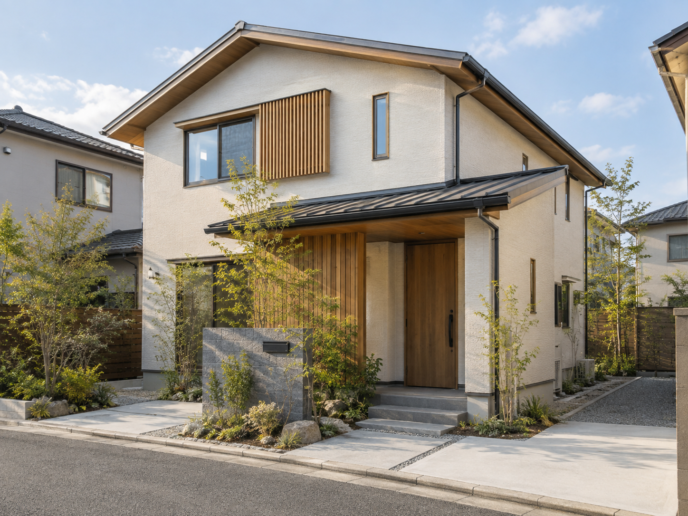
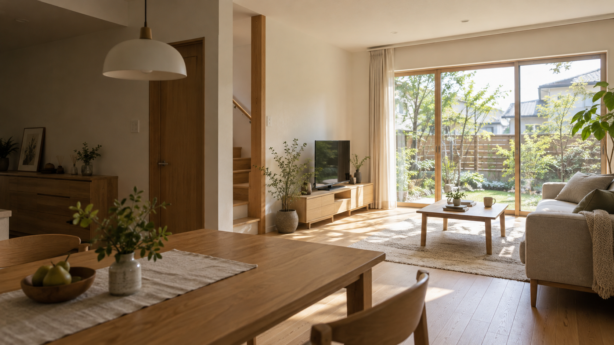
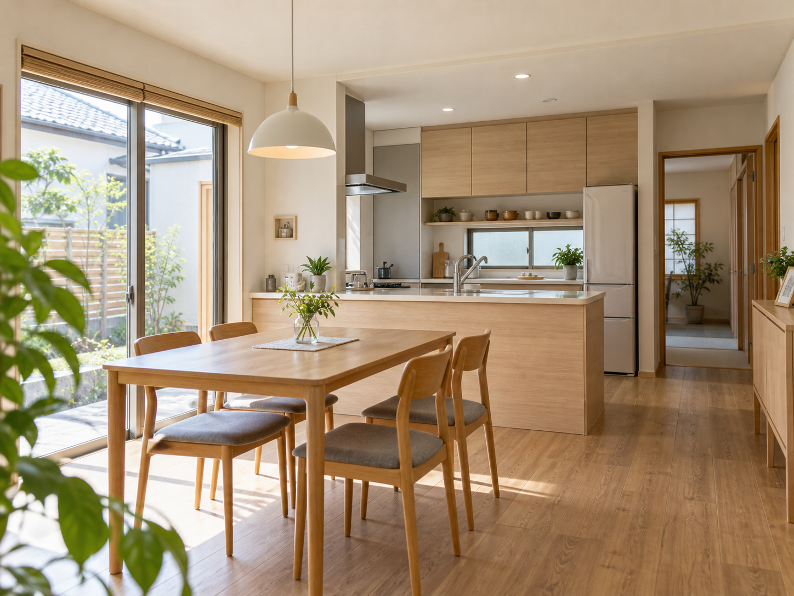
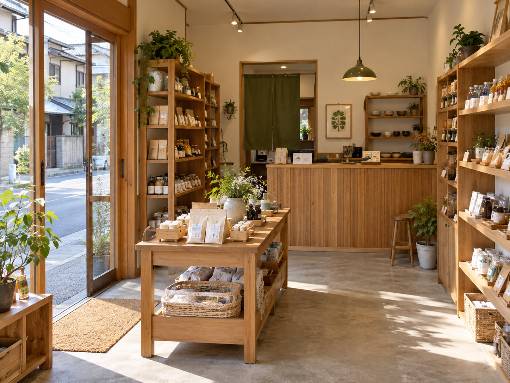

参考イメージ（生成画像）01
新築
家族のこれからの暮らしを見つめ、住まいづくりの相談から設計・施工まで。

参考イメージ（生成画像）
HOME & LIVING
新しく建てたい。今の家を暮らしに合わせたい。お店の空間を考えたい。
まだ内容が固まっていない段階でも、まずは「困っていること」「叶えたいこと」を整理できる案内を目指しました。
WHAT WE CAN DISCUSS
公式サイトで確認できた事業内容を、住まい手の視点で整理しています。

参考イメージ（生成画像）家族のこれからの暮らしを見つめ、住まいづくりの相談から設計・施工まで。

参考イメージ（生成画像）今の住まいを活かしながら、間取りや使い勝手を暮らしに合わせて整える相談。

参考イメージ（生成画像）住宅だけでなく、店舗の設計・施工についても相談できます。
FUTURE WORKS
ここにある写真は、同社の施工実績ではありません。正式制作時には、実際の施工写真とともに「工事内容」「相談の背景」「工夫した点」を紹介する構成を想定しています。
ABOUT
公式サイトに掲載されている会社情報を、確認できた範囲でまとめています。
CONSULTATION
「何を変えたいか」「どんな暮らしをしたいか」など、分かる範囲から整理できます。